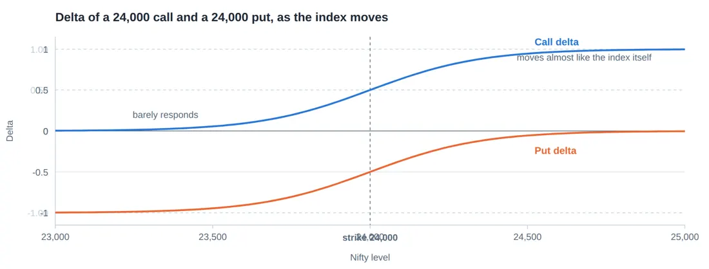
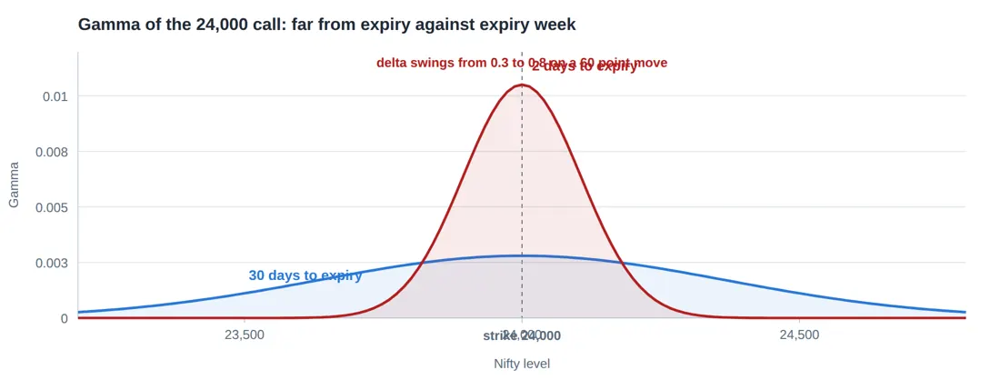
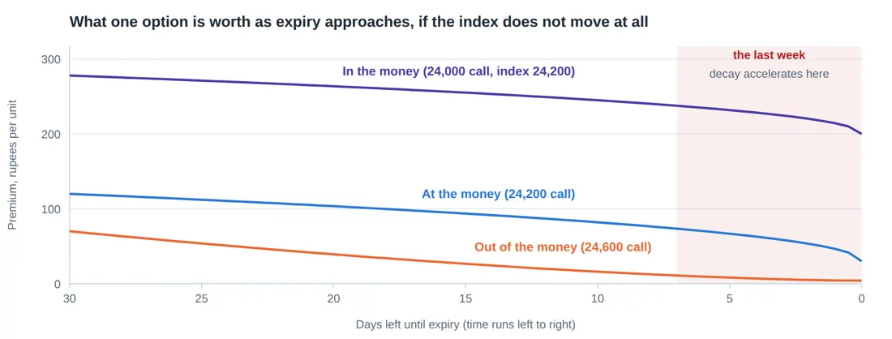
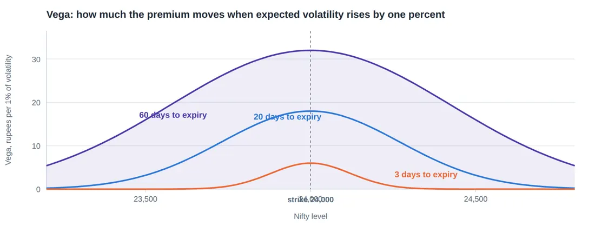

Library / MiyeeStockBuddy: The Complete Guide to Indian Markets
Part 11. Option Pricing and the Greeks
An option premium moves for five separate reasons, and they frequently pull in opposite directions. The Greeks are simply a name for measuring each reason on its own. They are not advanced mathematics, they are five sensible questions, and a trader who knows them stops being surprised by their own position.
11.1 What Decides an Option’s Price
Before the Greeks, the ingredients. An option premium is decided by five things, and only five.
Ingredient | If it increases, a CALL | If it increases, a PUT |
|---|---|---|
Price of the underlying | gets more expensive | gets cheaper |
Strike price | gets cheaper | gets more expensive |
Time left to expiry | gets more expensive | gets more expensive |
Expected volatility | gets more expensive | gets more expensive |
Interest rates | slightly more expensive | slightly cheaper |
Notice that time and volatility make both calls and puts dearer. That is because both increase the range of things that might happen, and an option is a claim on one tail of that range. More uncertainty means more chance the option finishes valuable, and the buyer pays for that chance.
Where the famous formula fits The Black and Scholes model is a formula that takes those five ingredients and produces a theoretical price. Every option screen you use is running some version of it. You do not need to compute it and you should not try. What matters is knowing what it consumes, because that tells you what will move your position. The Greeks are simply the model’s answer to "how much does the price move when I change one ingredient and hold the others still". |
11.2 Delta: How Much It Moves With the Index
Delta answers the first question anyone asks: if Nifty moves one point, how much does my option move? A delta of 0.45 means the premium changes by about 45 paise for each one point move in the index.

Figure 34. Delta is how much the option moves for a one point move in the index, and it is also a rough sense of the chance of finishing in the money. It is near zero for far out of the money options, about half at the strike, and near one deep in the money.
Position | Delta range | Reading | |
|---|---|---|---|
Deep out of the money call | 0.05 to 0.20 | Barely responds to the index | |
At the money call | around 0.50 | Moves at roughly half the speed of the index | |
Deep in the money call | 0.80 to 0.95 | Behaves almost like holding the index itself | |
Put options | 0 to -1 | Negative, because puts gain when the index falls | |
Delta in rupees, which is the only form that matters You hold one lot of the Nifty 24,000 call, delta 0.52, lot size 75. Nifty rises 60 points. Premium change per unit = 0.52 x 60 = 31.2 rupees Position change = 31.2 x 75 = 2,340 rupees Compare with one lot of futures on the same move: 60 x 75 = 4,500 rupees. The option captured about half the move, which is exactly what a delta of 0.52 promised. | |||
Delta as a rough probability
A delta of 0.30 is often read as roughly a thirty percent chance the option finishes in the money. This is an approximation rather than a theorem, but it is a useful one. It tells you immediately that a very cheap option is cheap because it will probably expire worthless, which is information the price alone does not make obvious.
Careful here Buying far out of the money options because they are cheap is the single most common way individuals lose money in Indian derivatives. A 12 rupee option is not a bargain. It is a lottery ticket with a delta of 0.06, and it is priced correctly at 12 rupees precisely because it almost never pays. The pattern that follows is predictable: eight or nine of these expire worthless, one pays several times over, the trader remembers the one, and repeats until the account is gone. |
11.3 Gamma: How Fast Delta Itself Changes
Delta is not constant. As the index moves toward your strike, delta rises; as it moves away, delta falls. Gamma measures how quickly that happens, and it is the Greek that turns a manageable position into an unmanageable one.

Figure 35. Gamma is how fast delta itself changes. It is small and flat when expiry is far away, and it spikes into a needle at the strike in the final days. A seller who was comfortable on Monday can be in real trouble by Thursday without the index doing anything unusual.
Gamma is highest at the money and near expiry. Far from expiry the curve is a gentle hill. In the last two days it becomes a needle, and an option that behaved calmly all month starts moving violently on small index moves.
Why expiry day feels different A 24,000 call with three weeks to run, Nifty at 24,000. Delta about 0.50, gamma small. Nifty moves 50 points up. Delta becomes about 0.54. The position behaves predictably. The same 24,000 call on expiry morning, Nifty at 24,000. Delta about 0.50, gamma very large. Nifty moves 50 points up. Delta jumps to about 0.85, and it now moves almost like a future. Nifty moves 50 points down. Delta collapses toward 0.15 and it stops responding to a recovery. The position changed character twice within an hour without you doing anything. |
Gamma cuts both ways, and it is why expiry day sellers get hurt If you bought the option, high gamma is a gift: your position accelerates in your favour and decelerates against you. If you sold it, high gamma is the opposite: your losses accelerate and your gains stall. A seller who was comfortably ahead at eleven in the morning can be badly behind by two in the afternoon, on a move that would have been trivial three weeks earlier. This is why selling options in the final days, which appears to be the easiest money in the market because time decay is fastest, is in fact the most dangerous week to be short. |
11.4 Theta: The Rent You Pay for Time
Theta measures how much value an option loses each day purely from the passage of time, with nothing else changing. It is negative for buyers, who lose it, and positive for sellers, who collect it.

Index held still at 24,200 throughout
Figure 36. Time value does not bleed away evenly. It drips for the first three weeks and then falls off a cliff in the last few days. That last stretch is why option buyers so often watch a correct view still lose money.
The essential and counter intuitive point is that decay is not even. Look at the curve: it drips for the first three weeks and then falls off a cliff. Roughly speaking, an at the money option loses a modest fraction of its time value in the first half of its life and the great majority in the final week.
Theta in rupees, over a quiet week You buy one lot of a Nifty 24,200 call at 120, with theta of -8. Lot size 75. Nifty does nothing at all for five days. Day 1: premium about 112. Position value falls by 8 x 75 = 600 Day 2: premium about 103 (theta grows as expiry nears) Day 3: premium about 93 Day 4: premium about 81 Day 5: premium about 66 You were not wrong. The index simply did not move, and you lost 4,050 rupees for the privilege of waiting. |
The rule to remember An option buyer needs to be right about three things at once: direction, size of move, and timing. An option buyer who is right about direction and wrong about timing loses money, every time. This is why buying options is far harder than it looks, and why most people who "trade options" are really buying lottery tickets against a clock. |
The mirror: theta is why people sell options
Every rupee the buyer loses to decay, the seller collects. Selling options is a business built on theta, and it works most of the time. What it does not survive without protection is gamma, which is the previous section. The two are permanently opposed: you cannot collect theta without being short gamma. Any strategy that claims otherwise is either a spread, which pays for the protection, or a misunderstanding.
11.5 Vega: Sensitivity to Expected Volatility
Vega measures how much the premium changes when expected volatility moves by one percentage point. It is positive for every option buyer, call or put, because more expected movement means more chance of finishing in the money.

Figure 37. Vega is what a change in expected volatility does to the premium. It is largest at the money and for options with plenty of time left, which is why a long dated at the money option is really a bet on volatility as much as on direction.
Vega is largest at the money and largest with plenty of time left. A three day option barely has vega, because there is not enough time left for volatility to matter. A sixty day at the money option is, to a large extent, a bet on volatility with a bet on direction attached.
The classic result event trap A company reports quarterly results on Thursday. On Tuesday the option market already knows this, so implied volatility in that stock is high, and premiums are inflated. You buy the at the money call on Tuesday for 60 rupees, expecting a good result. The result is good. The stock rises 2 percent on Thursday morning. The option is now worth 48 rupees, and you have lost money on a correct call. What happened: the uncertainty is gone, so implied volatility collapses from 42 percent to 26 percent. Vega worked hard against you and took more than the price move gave you. This is called volatility crush, and it happens around every scheduled event: results, budgets, election counts, RBI policy. |
The rule to remember Before an event, options are expensive because everyone expects movement. After it, they are cheap, whatever the outcome. Buying options just before a known event means paying for a move that is already in the price. If you must trade an event with options, do it with a spread, so that you are buying one inflated option and selling another. |
11.6 Rho, Briefly
Rho measures sensitivity to interest rates. For the short dated options that almost all Indian retail activity uses, it is the least important Greek by a wide margin, because a quarter percent rate change over a nine day contract changes almost nothing. It matters for long dated positions and for institutional books. Know the name and move on.
11.7 The Greeks Working Together
In a real position the Greeks act at the same time, and reading them together is what separates a trader from a gambler. Here is one position, and what each Greek is doing to it on a single day.
Greek | Value | What it is doing to you today | |
|---|---|---|---|
Delta | +0.52 | For every 1 point Nifty rises, you gain about 39 rupees on the lot | |
Gamma | +0.004 | If Nifty rises 50 points, your delta grows to about 0.72, so you gain faster | |
Theta | -8 | You lose 600 rupees a day for simply holding, and this grows as expiry nears | |
Vega | +14 | If expected volatility falls 2 points, you lose about 2,100 rupees regardless of direction | |
Rho | +3 | Effectively irrelevant on a nine day contract | |
Read this table as a sentence You need Nifty to rise, you need it to rise soon, and you need the market not to get calmer while you wait. Three conditions, all of which have to hold. If Nifty rises 40 points over the next four days while volatility drifts down, you can be right on direction and still finish the week down. Nothing has gone wrong. You simply bought a position that required more than one thing to go your way. Sellers face the mirror image: they profit if nothing happens, which is usually, and they are ruined by the occasion when something does. | |||
11.8 Put Call Parity, and Why Nothing Is Ever Free
There is a fixed relationship between the price of a call, the price of a put at the same strike and expiry, and the price of the underlying. If it were ever violated by more than transaction costs, a trader could lock in a risk free profit, and computers would close the gap within moments.
Call price - Put price = Spot price - Strike (discounted for the time to expiry) Nifty 24,000, one month to expiry, 24,000 strike Call 320, Put 190 320 - 190 = 130, which is roughly the cost of carry for the month. |
The practical value of knowing this is not arbitrage, which you will never win against a machine. It is that it tells you no combination of options can produce a free lunch. Any strategy promising high income with no risk has hidden the risk somewhere, and put call parity guarantees the risk exists. When someone shows you a "guaranteed monthly income" option strategy, this is the reason it cannot be true.
© Vipin Nair. This guide is for reading online only. Copying, downloading, printing and redistribution are not permitted. For study and general reference; not legal, tax or investment advice.